Web Server Statistics for tierrasegura.com Web Server Statistics for tierrasegura.com
Web Server Statistics for tierrasegura.com Web Server Statistics for tierrasegura.com(Go To: Top: General Summary: Monthly Report: Daily Summary: Hourly Summary: Domain Report: Organization Report: Failed Referrer Report: Referring Site Report: Browser Report: Browser Summary: Operating System Report: Status Code Report: File Size Report: File Type Report: Directory Report: Request Report)
(Figures in parentheses refer to the 7-day period ending Feb 28
2005 at 2:38 AM).
Successful requests: 4,972 (73)
Average successful requests per day: 48 (10)
Successful requests for pages: 686 (7)
Average successful requests for pages per day: 6 (0)
Failed requests: 48 (0)
Distinct files requested: 76 (10)
Distinct hosts served: 102 (1)
Data transferred: 28.631 megabytes (860.593 kilobytes)
Average data transferred per day: 288.645 kilobytes (122.941 kilobytes)
(Go To: Top: General Summary: Monthly Report: Daily Summary: Hourly Summary: Domain Report: Organization Report: Failed Referrer Report: Referring Site Report: Browser Report: Browser Summary: Operating System Report: Status Code Report: File Size Report: File Type Report: Directory Report: Request Report)
Each unit ( ) represents 10 requests
for pages or part thereof.
) represents 10 requests
for pages or part thereof.
month: #reqs: #pages: --------: -----: ------: Nov 2004: 2589: 325:Busiest month: Nov 2004 (325 requests for pages).Feb 2005: 589: 58:

(Go To: Top: General Summary: Monthly Report: Daily Summary: Hourly Summary: Domain Report: Organization Report: Failed Referrer Report: Referring Site Report: Browser Report: Browser Summary: Operating System Report: Status Code Report: File Size Report: File Type Report: Directory Report: Request Report)
Each unit () represents 4 requests
for pages or part thereof.
day: #reqs: #pages: ---: -----: ------: Sun: 269: 48:
(Go To: Top: General Summary: Monthly Report: Daily Summary: Hourly Summary: Domain Report: Organization Report: Failed Referrer Report: Referring Site Report: Browser Report: Browser Summary: Operating System Report: Status Code Report: File Size Report: File Type Report: Directory Report: Request Report)
Each unit () represents 2 requests
for pages or part thereof.
hour: #reqs: #pages: ----: -----: ------: 0: 46: 9:16: 189: 17:
22: 165: 18:
(Go To: Top: General Summary: Monthly Report: Daily Summary: Hourly Summary: Domain Report: Organization Report: Failed Referrer Report: Referring Site Report: Browser Report: Browser Summary: Operating System Report: Status Code Report: File Size Report: File Type Report: Directory Report: Request Report)
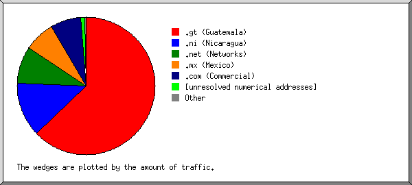
Listing domains, sorted by the amount of traffic.
#reqs: %bytes: domain
-----: ------: ------
3965: 55.48%: .gt (Guatemala)
638: 29.68%: .net (Networks)
225: 8.28%: [unresolved numerical addresses]
127: 6.29%: .com (Commercial)
14: 0.14%: .sc (Seychelles)
3: 0.13%: .in (India)
(Go To: Top: General Summary: Monthly Report: Daily Summary: Hourly Summary: Domain Report: Organization Report: Failed Referrer Report: Referring Site Report: Browser Report: Browser Summary: Operating System Report: Status Code Report: File Size Report: File Type Report: Directory Report: Request Report)
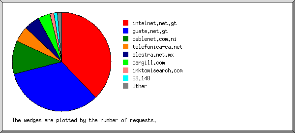
Listing the top 20 organizations by the number of requests, sorted by the number of requests.
#reqs: %bytes: organization
-----: ------: ------------
2143: 15.94%: guate.net.gt
1797: 38.59%: intelnet.net.gt
217: 10.10%: bellsouth.net
168: 8.63%: telefonica-ca.net
105: 2.12%: newcomamericas.net
90: 6.43%: gua.net
83: 2.46%: 66.201
60: 3.54%: alexa.com
54: 2.28%: t-dialin.net
37: 1.90%: 216.230
31: 1.51%: cox-internet.com
30: 1.24%: 63.245
28: 1.13%: 192.67
25: 0.94%: 198.108
25: 0.94%: terra.com.gt
25: 0.94%: kcc.com
18: 0.54%: 63.148
14: 0.14%: sc
8: 0.21%: thunderstone.com
3: 0.13%: vsnl.net.in
11: 0.26%: [not listed: 8 organizations]
(Go To: Top: General Summary: Monthly Report: Daily Summary: Hourly Summary: Domain Report: Organization Report: Failed Referrer Report: Referring Site Report: Browser Report: Browser Summary: Operating System Report: Status Code Report: File Size Report: File Type Report: Directory Report: Request Report)
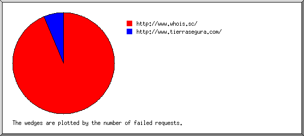
Listing referring URLs, sorted by the number of failed requests.
#reqs: URL
-----: ---
15: http://www.whois.sc/
1: http://www.tierrasegura.com/
(Go To: Top: General Summary: Monthly Report: Daily Summary: Hourly Summary: Domain Report: Organization Report: Failed Referrer Report: Referring Site Report: Browser Report: Browser Summary: Operating System Report: Status Code Report: File Size Report: File Type Report: Directory Report: Request Report)
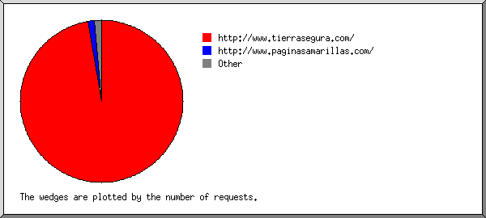
Listing referring sites, sorted by the number of requests.
#reqs: site
-----: ----
3205: http://www.tierrasegura.com/
99: http://tierrasegura.com/
14: http://www.paginasamarillas.com/
14: http://www.whois.sc/
2: http://www.bigweblist.com/
1: http://www.tierrasegura.com:2082/
1: http://inversionescf.com:2086/
(Go To: Top: General Summary: Monthly Report: Daily Summary: Hourly Summary: Domain Report: Organization Report: Failed Referrer Report: Referring Site Report: Browser Report: Browser Summary: Operating System Report: Status Code Report: File Size Report: File Type Report: Directory Report: Request Report)
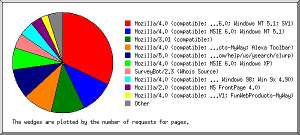
Listing browsers with at least 1 request for a page, sorted by the number of requests for pages.
#reqs: #pages: browser
-----: ------: -------
1239: 186: Mozilla/4.0 (compatible; MSIE 6.0; Windows NT 5.1)
550: 181: Mozilla/3.01 (compatible;)
696: 88: Mozilla/4.0 (compatible; MSIE 6.0; Windows NT 5.1; SV1)
945: 71: Mozilla/4.0 (compatible; MSIE 6.0; Windows 98; FunWebProducts-MyWay; Alexa Toolbar)
60: 38: ia_archiver
18: 18: Mozilla/4.0 (compatible; MSIE 6.0; Windows XP)
14: 14: SurveyBot/2.3 (Whois Source)
217: 10: Mozilla/4.0 (compatible; MSIE 6.0; Windows NT 5.1; SV1; .NET CLR 1.0.3705; .NET CLR 1.1.4322)
113: 10: Mozilla/4.0 (compatible; MSIE 6.0; Windows NT 5.1; .NET CLR 1.0.3705)
60: 6: Mozilla/4.0 (compatible; MSIE 5.01; Windows NT 5.0)
55: 6: Mozilla/5.0 (Windows; U; Windows NT 5.1; en-US; rv:1.7.2) Gecko/20040804 Netscape/7.2 (ax)
56: 6: Mozilla/4.0 (compatible; MSIE 5.5; Windows 98)
164: 6: Mozilla/2.0 (compatible; MS FrontPage 4.0)
8: 6: Mozilla/4.0 (compatible; T-H-U-N-D-E-R-S-T-O-N-E)
38: 6: Mozilla/5.0 (Windows; U; Windows NT 5.1; es-ES; rv:1.7.1) Gecko/20040707
83: 5: Mozilla/4.0 (compatible; MSIE 6.0; Windows 98; Win 9x 4.90; ESB{EBD3F4D6-3393-41E2-9733-DB8659860613}; Alexa Toolbar)
54: 4: Mozilla/4.0 (compatible; MSIE 6.0; Windows NT 5.1; SV1; .NET CLR 1.1.4322)
31: 4: Mozilla/4.0 (compatible; MSIE 6.0; Windows NT 5.0)
55: 3: Mozilla/4.0 (compatible; MSIE 6.0; Windows NT 5.1; FunWebProducts)
28: 3: Mozilla/4.0 (compatible; MSIE 5.01; Windows NT)
52: 2: Mozilla/5.0 (Windows; U; Windows NT 5.1; rv:1.7.3) Gecko/20041001 Firefox/0.10.1
58: 2: Mozilla/4.0 (compatible; MSIE 6.0; Windows NT 5.1; {87168E0E-AEA2-4C1F-8664-B2BD3B513ECC})
25: 1: Mozilla/4.0 (compatible; MSIE 6.0; Windows NT 5.1; .NET CLR 1.0.3705; .NET CLR 1.1.4322)
1: 1: Microsoft Data Access Internet Publishing Provider Cache Manager
1: 1: Sqworm/2.9.85-BETA (beta_release; 20011115-775; i686-pc-linux-gnu)
25: 1: Mozilla/4.0 (compatible; MSIE 6.0; Windows 98)
1: 1: curl/7.10.6 (i386-redhat-linux-gnu) libcurl/7.10.6 OpenSSL/0.9.7a ipv6 zlib/1.1.4
1: 1: NPBot (http://www.nameprotect.com/botinfo.html)
1: 1: Mozilla/4.0 (Compatible; MSIE 6.0; Windows NT 5.1)
1: 1: InnerpriseBot/1.0 (http://www.innerprise.com/)
25: 1: Mozilla/4.0 (compatible; MSIE 5.5; Windows NT 4.0; DigExt)
3: 1: Mozilla/5.0 (X11; U; Linux i686; en-US; rv:1.7.5) Gecko/20041107 Firefox/1.0
293: 0: [not listed: 1 browser]
(Go To: Top: General Summary: Monthly Report: Daily Summary: Hourly Summary: Domain Report: Organization Report: Failed Referrer Report: Referring Site Report: Browser Report: Browser Summary: Operating System Report: Status Code Report: File Size Report: File Type Report: Directory Report: Request Report)
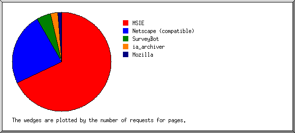
Listing browsers with at least 1 request for a page, sorted by the number of requests for pages.
#: #reqs: #pages: browser --: -----: ------: ------- 1: 3729: 420: MSIE : 3560: 404: MSIE/6 : 169: 16: MSIE/5 2: 722: 193: Netscape (compatible) 3: 60: 38: ia_archiver 4: 148: 15: Mozilla : 148: 15: Mozilla/1 5: 14: 14: SurveyBot : 14: 14: SurveyBot/2 6: 1: 1: InnerpriseBot : 1: 1: InnerpriseBot/1 7: 1: 1: NPBot (http: : 1: 1: NPBot (http://www 8: 1: 1: curl : 1: 1: curl/7 9: 1: 1: Sqworm : 1: 1: Sqworm/2 10: 1: 1: Microsoft Data Access Internet Publishing Provider Cache Manager : 293: 0: [not listed: 1 browser]
(Go To: Top: General Summary: Monthly Report: Daily Summary: Hourly Summary: Domain Report: Organization Report: Failed Referrer Report: Referring Site Report: Browser Report: Browser Summary: Operating System Report: Status Code Report: File Size Report: File Type Report: Directory Report: Request Report)
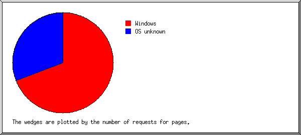
Listing operating systems, sorted by the number of requests for pages.
#: #reqs: #pages: OS --: -----: ------: -- 1: 3874: 434: Windows : 2476: 323: Windows XP : 1026: 78: Windows 98 : 145: 14: Unknown Windows : 91: 10: Windows 2000 : 83: 5: Windows ME : 53: 4: Windows NT 2: 1092: 248: OS unknown 3: 5: 3: Unix : 5: 3: Linux
(Go To: Top: General Summary: Monthly Report: Daily Summary: Hourly Summary: Domain Report: Organization Report: Failed Referrer Report: Referring Site Report: Browser Report: Browser Summary: Operating System Report: Status Code Report: File Size Report: File Type Report: Directory Report: Request Report)
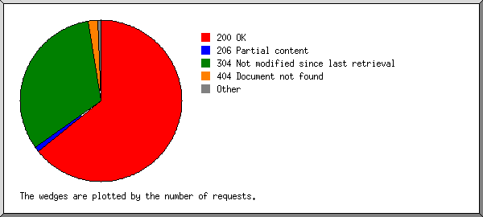
Listing status codes, sorted numerically.
#reqs: status code
-----: -----------
1933: 200 OK
17: 206 Partial content
3022: 304 Not modified since last retrieval
6: 401 Authentication required
42: 404 Document not found
(Go To: Top: General Summary: Monthly Report: Daily Summary: Hourly Summary: Domain Report: Organization Report: Failed Referrer Report: Referring Site Report: Browser Report: Browser Summary: Operating System Report: Status Code Report: File Size Report: File Type Report: Directory Report: Request Report)
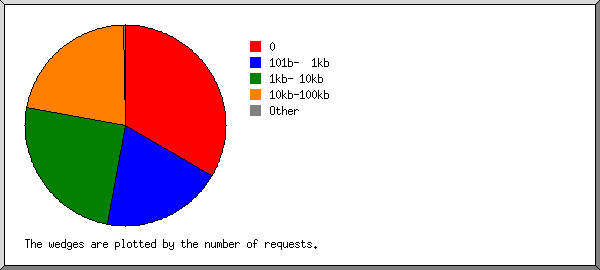
size: #reqs: %bytes:
-----------: -----: ------:
0: 3027: :
1b- 10b: 0: :
11b- 100b: 0: :
101b- 1kb: 612: 1.52%:
1kb- 10kb: 754: 13.17%:
10kb-100kb: 571: 66.55%:
100kb- 1Mb: 8: 18.76%:
(Go To: Top: General Summary: Monthly Report: Daily Summary: Hourly Summary: Domain Report: Organization Report: Failed Referrer Report: Referring Site Report: Browser Report: Browser Summary: Operating System Report: Status Code Report: File Size Report: File Type Report: Directory Report: Request Report)

Listing extensions with at least 0.1% of the traffic, sorted by the amount of traffic.
#reqs: %bytes: extension -----: ------: --------- 1371: 59.07%: .jpg [JPEG graphics] 275: 24.83%: .swf 522: 7.63%: .htm [Hypertext Markup Language] 285: 3.01%: .exe [Executables] 158: 2.14%: [directories] 2006: 1.72%: .gif [GIF graphics] 340: 1.58%: .js [JavaScript code] 15: 0.02%: [not listed: 2 extensions]
(Go To: Top: General Summary: Monthly Report: Daily Summary: Hourly Summary: Domain Report: Organization Report: Failed Referrer Report: Referring Site Report: Browser Report: Browser Summary: Operating System Report: Status Code Report: File Size Report: File Type Report: Directory Report: Request Report)
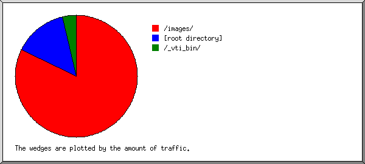
Listing directories with at least 0.01% of the traffic, sorted by the amount of traffic.
#reqs: %bytes: directory -----: ------: --------- 1646: 83.90%: /images/ 3032: 13.09%: [root directory] 294: 3.01%: /_vti_bin/
(Go To: Top: General Summary: Monthly Report: Daily Summary: Hourly Summary: Domain Report: Organization Report: Failed Referrer Report: Referring Site Report: Browser Report: Browser Summary: Operating System Report: Status Code Report: File Size Report: File Type Report: Directory Report: Request Report)
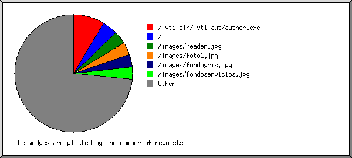
Listing files with at least 20 requests, sorted by the number of requests.
#reqs: %bytes: last time: file -----: ------: ------------------: ---- 285: 3.01%: Dec/ 6/04 9:20 AM: /_vti_bin/_vti_aut/author.exe 173: 0.47%: Feb/25/05 2:41 PM: /menu_.js 169: 3.60%: Feb/27/05 10:20 PM: /images/header.jpg 167: 1.11%: Feb/27/05 10:23 PM: /xaramenu.js 161: 1.81%: Feb/25/05 2:41 PM: /images/fondogris.jpg 160: 1.86%: Feb/25/05 2:41 PM: /images/servicios.jpg 159: 3.01%: Feb/25/05 2:41 PM: /images/foto1.jpg 159: 1.22%: Feb/25/05 2:41 PM: /images/fondoservicios.jpg 158: 2.14%: Feb/25/05 4:41 PM: / 30: 0.52%: Feb/25/05 2:41 PM: /?166.158.intelnet.net.gt 148: 0.11%: Feb/27/05 10:38 PM: /menu__b2_over.gif 147: 0.15%: Feb/27/05 10:38 PM: /menu__b3_over.gif 146: 0.14%: Feb/25/05 2:41 PM: /menu__b5.gif 145: 0.12%: Feb/27/05 10:38 PM: /menu__b2.gif 144: 0.15%: Feb/25/05 2:41 PM: /menu__b3.gif 143: 0.13%: Feb/27/05 10:37 PM: /menu__b5_over.gif 142: 0.06%: Feb/27/05 10:28 PM: /menu__left.gif 142: 10.42%: Feb/27/05 10:18 PM: /images/rotativas2.swf 142: 0.10%: Feb/27/05 10:28 PM: /menu__b1_over.gif 142: 0.10%: Feb/25/05 2:41 PM: /menu__b1.gif 141: 0.13%: Feb/25/05 2:41 PM: /menu__b6.gif 140: 0.17%: Feb/25/05 2:41 PM: /menu__b4_over.gif 139: 0.06%: Feb/27/05 10:38 PM: /menu__right.gif 138: 0.13%: Feb/25/05 2:41 PM: /menu__b6_over.gif 138: 0.17%: Feb/25/05 2:41 PM: /menu__b4.gif 133: 14.40%: Feb/25/05 2:41 PM: /images/rotativasgrande.swf 91: 4.35%: Feb/25/05 2:41 PM: /images/tubos.jpg 86: 1.65%: Feb/23/05 1:05 PM: /perforacion.htm 75: 0.93%: Feb/16/05 2:08 PM: /rehabilitacion.htm 64: 1.91%: Feb/23/05 1:05 PM: /images/perforacion.jpg 63: 2.11%: Feb/23/05 1:05 PM: /images/desarenador.jpg 59: 0.63%: Feb/25/05 2:43 PM: /contactenos.htm 58: 2.97%: Feb/23/05 1:05 PM: /images/produccion.jpg 49: 0.72%: Feb/16/05 2:08 PM: /equipo.htm 48: 0.62%: Feb/16/05 2:08 PM: /sellamiento.htm 46: 0.49%: Feb/23/05 1:05 PM: /index.htm 45: 1.77%: Feb/13/05 9:52 PM: /images/DSC01753.jpg 43: 0.53%: Feb/13/05 9:52 PM: /its.htm 39: 0.61%: Feb/16/05 2:08 PM: /profundizacion.htm 39: 3.18%: Feb/23/05 1:05 PM: /images/tubol.jpg 38: 2.52%: Feb/25/05 2:42 PM: /images/quienes_somos.jpg 35: 0.87%: Feb/25/05 2:42 PM: /quienes_somos.htm 35: 1.17%: Dec/27/04 12:08 PM: /images/profundizacion.jpg 34: 2.06%: Feb/10/05 10:17 PM: /images/equipo.jpg 33: 2.48%: Dec/29/04 10:32 AM: /images/rehabilitacion.jpg 32: 0.56%: Feb/13/05 9:52 PM: /entrenamiento.htm 31: 2.05%: Dec/29/04 10:32 AM: /images/rehabilitacion2.jpg 68: 21.05%: Feb/ 7/05 11:14 PM: [not listed: 7 files]
(Go To: Top: General Summary: Monthly Report: Daily Summary: Hourly Summary: Domain Report: Organization Report: Failed Referrer Report: Referring Site Report: Browser Report: Browser Summary: Operating System Report: Status Code Report: File Size Report: File Type Report: Directory Report: Request Report)